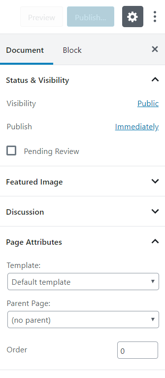

WP Basics
Logos:
Watch the following video for changing logos properly in all locations.
Posts:
Go to Dasboard > Posts to find all the blog posts.
Add a New Post:
- Go to Dasboard > Posts and click add new.
- Write the title of your post.
- Populate the post with WordPress gutenberg block editor. To learn more about block editor click here.
- Publish Post. Done!!
You can add image slider to your post. Just add images from the media library to the post slider metabox located under the post editor.
Pages:
Go to Dasboard > pages to find all the pages.
Add a New Page:
- Go to Dasboard > pages and click add new.
- Write the title of your page.
-
Select either default template or blank template in the page attribute dropdown in the right side panel.

- Configure page settings in the meta options box.
-
Click Edit with Elementor button at the top left corner.
Click here for more information about how to use elementor page builder.

- Publish Post. Done!!
Choose homepage:
If you've imported demo contents, your homepage is already set. However, you may want to change it. To do so, go to Dasboard > Settings > Reading and select your homepage and submit the form.
Widgets
Go to Dasboard > Appearance > Widgets to assign widgets to sidebars. On the left, you have widget list and on the right, you have sidebar. Upon theme and plugin installation, beehive adds some sidebars that are ready be used.
To assign an widget to a sidebar, you need to drag the widget from the left and leave it on the sidebar and the widget will be assigned to the sidebar. Yes, it's that simple.
Beehive also allows you to add unlimited sidebars. Click here for more information
WordPress Settings
WordPress settings can be found right away at Dasboard > Settings. Only a user with the administrator user role has the access to the settings tab. Good thing is you don't need worry about most of these settings.
General:
General contains settings such as Site Title, Tagline, WordPress URL, Site URL, E-mail, Registration option, and many other general options for the WordPress site.
Writing:
Writing contains settings related to the post formatting and category options.
Discussion:
Discussion contains settings related to linking posts with other blogs that are referenced, comment settings, e-mail notifications for comments, and options for comment moderation.
Media:
Media contains settings related to upload and management of images and other media within WordPress. Things like image sizes and cropping options can be managed here.
Permalinks:
Permalinks contains settings related to URL structure of the website. These settings make it easier for users to find and remember URLs to specific posts. Using the correct structure will also help to better organize posts within the various categories. Options in this setting allow you to control whether you want dates reflected in your URLs or just titles and categories, or some combination of both.
Customizer
Customizer will let you make changes to your wordpress on live. Find customizer settings at Dasboard > Appearance > Customize.
You can update your site identity such as logo, favicon, site title and tagline from here.